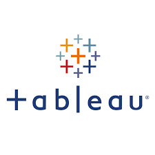

Over the years there has been a relatively gradual increase in crime and unemployment in South Africa. Therefore, this project aimed to determine if there is a significant correlation between these two variables where the period is covered over 10 years from 2006 to 2016. In the project, I also demonstrate data cleansing techniques and data visualisation using Python. The datasets where obtained from Kaggle and from the SAPS website


In this project, I downloaded Covid 19 dataset from Our World in Data website. This was a CSV file that I split into two tables and imported into Microsoft SQL Server. The aim of this was to write different queries exploring the data of cases, deaths and vaccinations around the globe. Data is from January 2020 till July 2021.

Data Visualisations (Dashboards) on my Tableau Public Profile.

The aim of this project was about predicting stock prices of the top 3 companies on the JSE which are Nasper, BHP and Richemont. Monte Carlo Simulation was the method of choice for the prediction. The period of prediction was 250 days and 15 simulations were done for each stock. The data was obtained using the Yahoo Finance API.

This project aimed to ascertain if other Socio-Economic indices such as Purchasing Power Index, Health Care Index, Safety Index and Cost of Living have a significant or insignificant relationship with the Quality of Life Index. Multiple linear regression was the statistical method used. The data set was obtained from Kaggle.
In this project, the aim was to do some data cleaning techniques of Nashville housing data. The data set was obtained from Kaggle as a CSV, and I imported it into Microsoft SQL Server. I conducted techniques such as removing null values, removing duplicate records, changing a columns data type etcetera.
In this project, I aimed to develop an interactive dashboard to visualise global data of Gross Domestic Product (GDP), Foreign Direct Investment (FDI) and Balance of Payments (BoP). The period of the data is from 2010 to 2020 and data was sourced from the World Bank Data Bank. In the project, I created measures by using DAX to create KPIs. When viewing the project make use of the filters available, Year and Country, to better interact with the data.